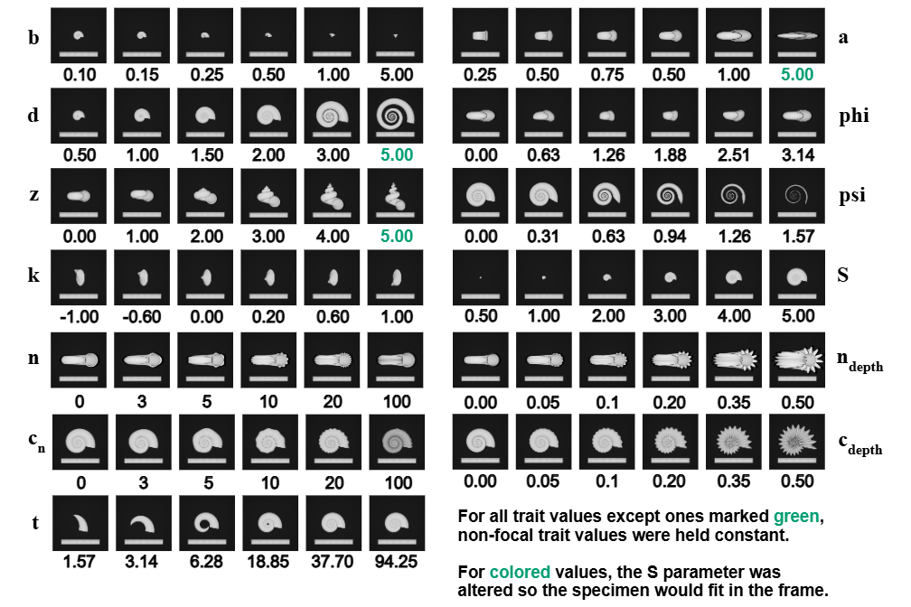

Research
Deep Comparative Methods

While deep learning models can fit functions to any sort of data, they still always include inductive assumptions about how that data behaves / the processes that led to it being what it is. When dealing with images, convolutional neural networks allow us to incorporate biases about the spatial distribution of patterns. When dealing with time-series data, LSTMs allow us to incorporate biases about the order of elements in a sequence.
When dealing with evolutionary data, we can incorporate similar biases, by using clever restructuring of autoencoders and multi-task learning algorithms to bias our models with information from phylogeny, ontogeny, or other biological processes. In this way, we can ground increasingly high-dimensional, or even raw, datasets in our understanding of reality, and possibily discover new processes that we far more difficult to uncover previously.
Synthetic Evolutionary Image and 3D Mesh Datasets

One way to address this issue is by validating models on simulated raw data with TraitBlender, a Blender add-on I developed for generating synthetic museum-style image datasets from defined morphospaces and known evolutionary processes.
Measurement and Meaning in Evolution and AI
My work in this area is primarily theoretical, focused on connecting the regularization tools of representation learning, such as metric learning, domain adaptation, sparsity, and interpretability constraints, to principles from measurement theory in evolutionary biology. Rather than treating learned traits as automatically meaningful, I am interested in when these tools produce representations that are actually commensurable with macroevolutionary questions.
Ontologies and Computable Trait Descriptions

Whenever we make models, we are attempting to codify statements about the world. For a model to be meaningful, however, the assumptions we put into it must be reflective of our assumptions about external reality. When we are dealing with traits that have complex, nonlinear dependencies on each other, doing this can be very difficult.
I've contributed to projects that address this problem by incorporating biological knowledge into models directly in the form of ontologies, which are knowledge graphs that specify the hierarchical relationships / dependencies between traits.
The RPhenoscate Paper | The SCATE (Semantic Comparative Analysis of Trait Evolution) Project